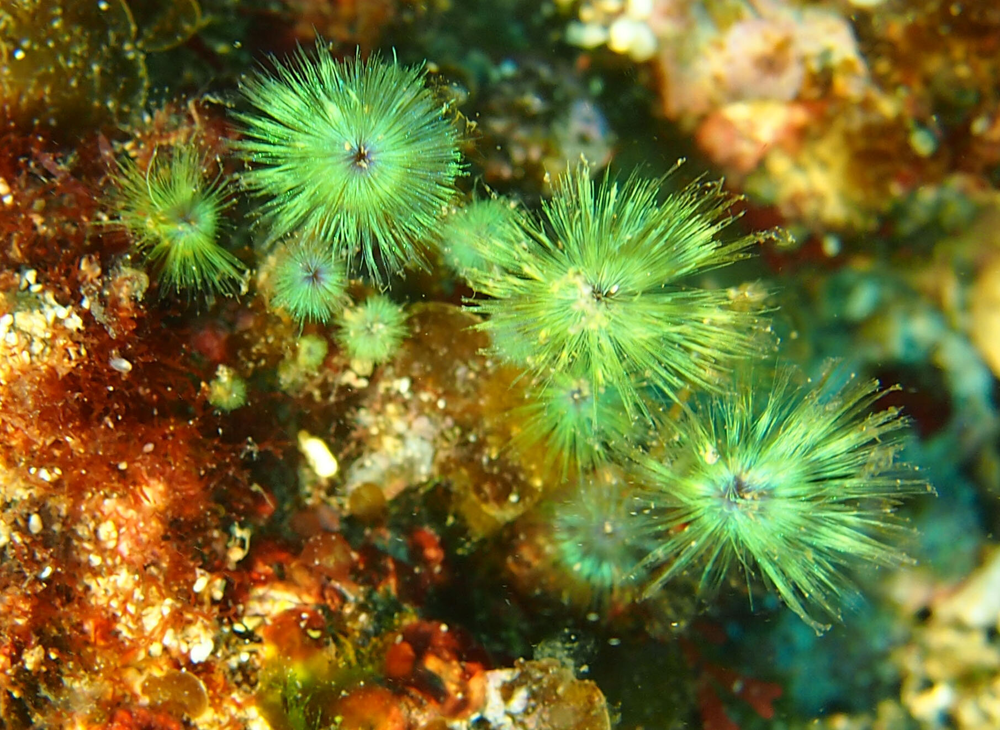
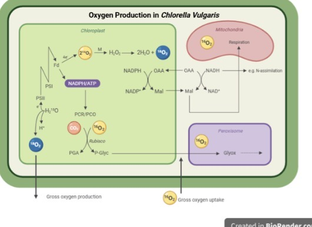
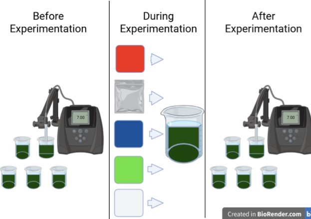
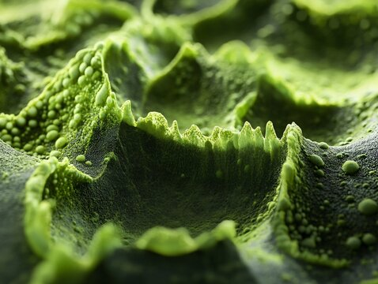

This study aimed to investigate the effect of different light wavelengths on the oxygen production rates of Chlorella Vulgaris. Chlorella Vulgaris is known to be sensitive to environmental changes, especially changes in its exposure to visual effects. The objective of this experiment was to determine the most effective light wavelength, from experimental groups of Red Light, Green Light, Blue Light, White Light, and Black Light that optimized oxygen concentration in Chlorella Vulgaris. It was hypothesized that red and blue wavelengths would yield the highest oxygen rates due to factors from previous research in the field and the fact that chlorophyll pigments in plants favor those wavelengths.
This experiment is designed to investigate the light wavelength on oxygen production from the species of microalgae known as Chlorella Vulgaris. By exposing the different samples of this algae to an expansive array of different light wavelengths, including white, blue, green, and red light among other colors under a controlled temperature and efficient nutrient cycling, this experiment aims to quantify the production of oxygen as a function of light intensity. The research hypothesis present in this experiment is that different light wavelengths/colors of light will have a significant effect on the oxygen production in Chlorella Vulgaris, with certain wavelengths in red and blue light resulting in higher rates. These predictions are grounded and supported by previous work that shows how the impact of light quality can influence metabolic activity in microalgae with specific mechanisms.


Understanding the impact of different light wavelengths on the processes of microalgae in an ecosystem is of growing interest to scientists, given the benefits and importance of microalgae to their habitat. Microalgae are crucial due to their role as the primary producers in aquatic food webs. They are photosynthetic and are able to produce large amounts of oxygen and nutrient cycling in a short period of time. Chlorella Vulgaris is also a main factor of biofuel production, a healthier alternative for the environment away from fossil fuels. Researching their phenomena is essential to understanding their increasing role in biotechnology. Improvements in remote sensing have improved our understanding of the mechanisms in microalgal responses to changes in the ecosystem.